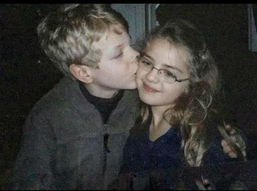
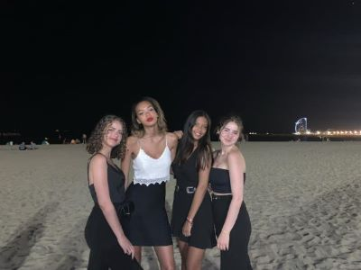
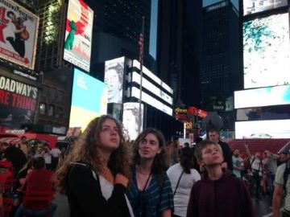
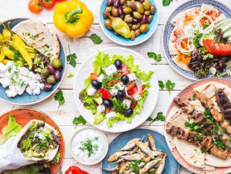

J'ai 18 ans, ce site internet est une manière de mieux me connaitre à travers mes expériences et mes hoobies que je partage. J'aime voyager, j'aime découvrir de nouvelles gastronomies et le sport... Plus tard, je souhaite devenir chef de produit dans l'entreprise qui me correspond :)
J'ai un frère de 15 ans et une soeur de 20 ans. Mes parents vivent avec mon frère à Cachan, une banlieue parisien.Je reviens les voir tous les week-ends. Je suis très proche de mes cousines du coté de mon père, nous nous retrouvons en famille tous les dimanches chez mon grand-père.
J'ai fait mon collège-lycée à l'Institut Notre Dame, là ou j'ai rencontré mes meilleurs amis et mon copain depuis maintenant 2 ans. Malgré nos partours tous différents, je réussi à les voir tous les week-ends. Tous les mythes sur les amitiés qui disparaissent apres le lycée n'ont pas fait effet et j'en suis la plus heureuse. Aujourd'hui, je vis à Cergy, en colocation avec 6 personnes incroyable qui sont devenus mes meilleurs amies à l'Essec. Elles ont une place très important dans mon coeur et je souhaite sincèrement que elle y reste à vie malgré la distante qui s'installera l'année prochaine lors des échanges inter-campus.
J'ai beaucoup voyagé avec mes parents, des voyages touristiques ou pour aller voir de la famille, aux Etats-Unis, au Maroc, en Italie, au Pays-Bas...J'aime aussi voyager avec mes amis. Je suis partie à Barcelone l'année dernière et je souhaite partir avec eux à Zagreb cette année. J'ai aussi réalisé des voyages linguistiques notamment en Irlande.
Lors de mes divers voyages, j'ai appris à aimer découvrir les différentes cultures gastronomiques de chacun. Depuis, je cuisine souvent avec ma mère.
Le premier sport qui m'a le plus intéressé était la natation que j'ai pratiqué pendant 3 ans avant de devoir arreter pour des raisons médicales. J'ai alors fait différents sports sans vraiment en trouver qui me correspondait, la danse contemporaine, le karaté, le handball, l'athétisme...J'ai ensuite découvert la boxe, c'est le sport qui jusqu'ici me correspond le plus. Il me permet de me surpasser et de me défouler en me faisant sortir de mon quotidien